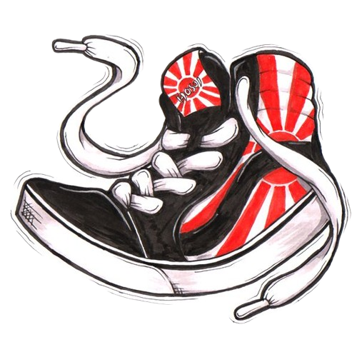

Layanan Profesional
Sepatu Bersih, Penampilan Sempurna
Percayakan perawatan sepatu kesayangan Anda kepada Clean Craft. Dengan layanan profesional dan teknologi terdepan, kami akan mengembalikan sepatu Anda seperti baru kembali.

Mengapa Memilih Clean Craft?
Kami berkomitmen memberikan layanan terbaik dengan standar kualitas tinggi
Kualitas Premium
Menggunakan produk dan teknik berkualitas tinggi dan profesional
Pengerjaan Cepat
Layanan fast clean 1-2 hari, dengan tracking real-time
Garansi Kepuasan
Tidak puas? Kami akan mengerjakan ulang tanpa biaya tambahan
Berpengalaman
Telah menangani ribuan sepatu dengan berbagai jenis bahan
Siap Membuat Sepatu Anda Bersih?
Hubungi kami sekarang dan rasakan perbedaannya. Konsultasi gratis tersedia!